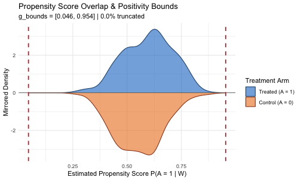

tidytmle is a semiparametric Targeted Maximum Likelihood Estimation (CV-TMLE) orchestrator built natively for the tidymodels ecosystem. Rather than forcing TMLE into a prediction-only parsnip model specification, tidytmle sits above workflows, workflowsets, recipes, rsample, hardhat, and yardstick so any tidymodels workflow can serve as a cross-fitted Super Learner nuisance model.
Installation
You can install the development version of tidytmle from GitHub with:
# install.packages("pak")
pak::pak("michaelespero/tidytmle")Key Capabilities
| Capability | Design & Statistical Guardrails |
|---|---|
| Progressive-Disclosure API | 3-line Level 1 tmle_spec() \|> fit() default scaling smoothly to Level 2 recipes, workflows, and workflow_set ensembles |
| Role-Aware Recipe Splitting | Clones user recipes per nuisance (Q, g, C) so treatment A never leaks into propensity models and id / weights never leak into predictors |
| Automatic Informative Missingness | Detects outcome NAs when censoring is omitted and models via
|
| Built-In Semiparametric Rigor | 10-fold CV-TMLE by default, bounded canonical logistic fluctuation on scaled [0, 1] outcomes, Gruber & van der Laan adaptive positivity bounds, joint EIF inference (ate, rr, or, att, atc), cluster-robust SEs, and hardhat case weights |
Instant retarget() |
Re-runs positivity bounds, estimands, or subgroups in milliseconds using cached out-of-fold nuisance predictions with zero ML refitting |
| LMTP & DR-Learner CATE |
shift() and scale_tx() continuous-treatment density-ratio TMLE plus fit_cate() and qini_auc() uplift scoring |
Example
Start with a 3-line cross-fitted specification using tidyselect causal roles and simultaneous multi-estimand inference:
library(tidytmle)
df <- sim_causal_cohort(n = 350, outcome_type = "binary", seed = 42)
fit <- tmle_spec(
outcome = y,
treatment = a,
covariates = c(age, sex, starts_with("lab_")),
estimand = c("ate", "rr", "or")
) |>
set_resamples(v_folds = 5L) |>
fit(data = df)
fit
#>
#> ── TMLE Fit Summary ──
#>
#> n = 350 (observed = 350) | 5-fold CV-TMLE | logistic fluctuation | 1.86s
#>
#> ── Causal Estimates
#> ATE est = 0.1071 (SE = 0.0511) 95% CI [0.0069, 0.2074] p = 0.0362
#> RR est = 1.3295 (SE = 0.1427) 95% CI [1.0051, 1.7587] p = 0.0460
#> OR est = 1.5805 (SE = 0.2233) 95% CI [1.0202, 2.4484] p = 0.0404
#>
#> ── Nuisance Super Learners
#> Q Super Learner: AUC = 0.713 (weights: glmnet 0.34, glm 0.34, ranger 0.33)
#> g Super Learner: AUC = 0.623 (weights: ranger 0.33, glm 0.33, glmnet 0.33)
#>
#> ── Diagnostics
#> ✔ All checks healthy: mean EIF = 5.13e-14, truncated = 0.0%, max EIF leverage = 4.2%.
# Simultaneous uniform confidence bands & VanderWeele-Ding E-values
tidy(fit, simultaneous = TRUE, e_value = TRUE)
#> # A tibble: 3 × 11
#> estimand term estimate std.error statistic p.value conf.low conf.high e_value
#> <chr> <chr> <dbl> <dbl> <dbl> <dbl> <dbl> <dbl> <dbl>
#> 1 ate ATE 0.107 0.0511 2.09 0.0362 0.000382 0.214 1.74
#> 2 rr RR 1.33 0.143 2.00 0.0460 0.987 1.79 1.99
#> 3 or OR 1.58 0.223 2.05 0.0404 0.992 2.52 2.54
#> # ℹ 2 more variables: e_value_ci <dbl>, crit.value <dbl>
# Instant retargeting without ML refitting
retarget(fit, g_bounds = c(0.05, 0.95)) |>
tidy()
#> # A tibble: 3 × 8
#> estimand term estimate std.error statistic p.value conf.low conf.high
#> <chr> <chr> <dbl> <dbl> <dbl> <dbl> <dbl> <dbl>
#> 1 ate ATE 0.107 0.0511 2.09 0.0362 0.00690 0.207
#> 2 rr RR 1.33 0.143 2.00 0.0460 1.01 1.76
#> 3 or OR 1.58 0.223 2.05 0.0404 1.02 2.45
# Propensity overlap diagnostic
autoplot(fit, type = "overlap")
plot of chunk example
Code of Conduct
Please note that the tidytmle project is released with a Contributor Code of Conduct. By contributing to this project, you agree to abide by its terms.